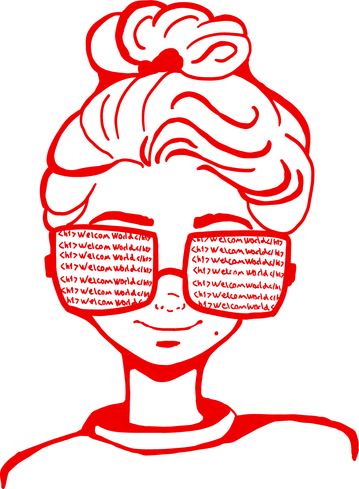
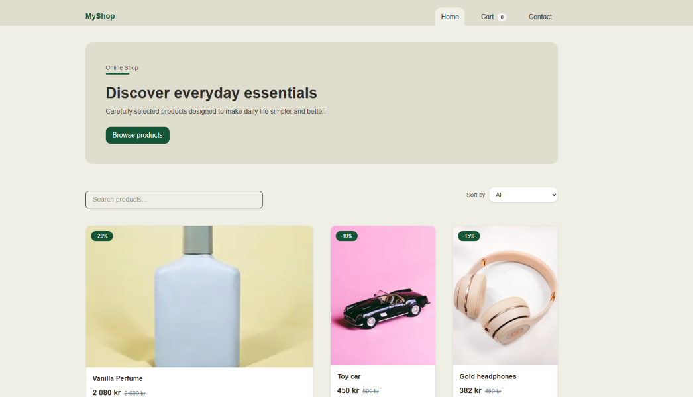
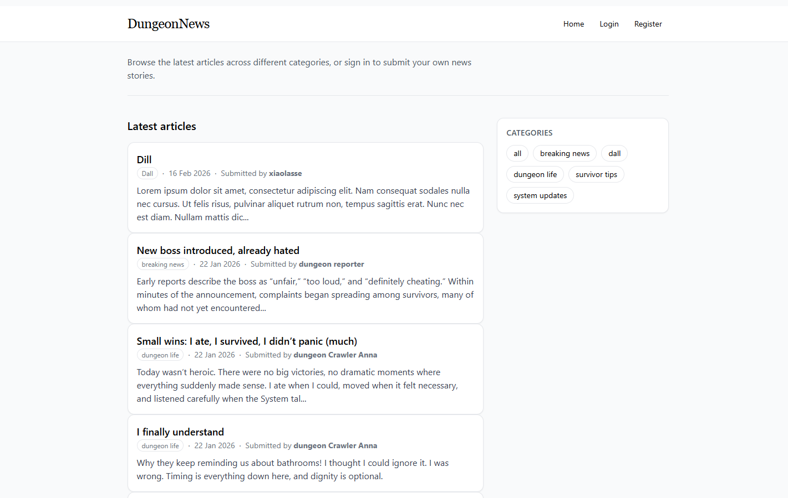
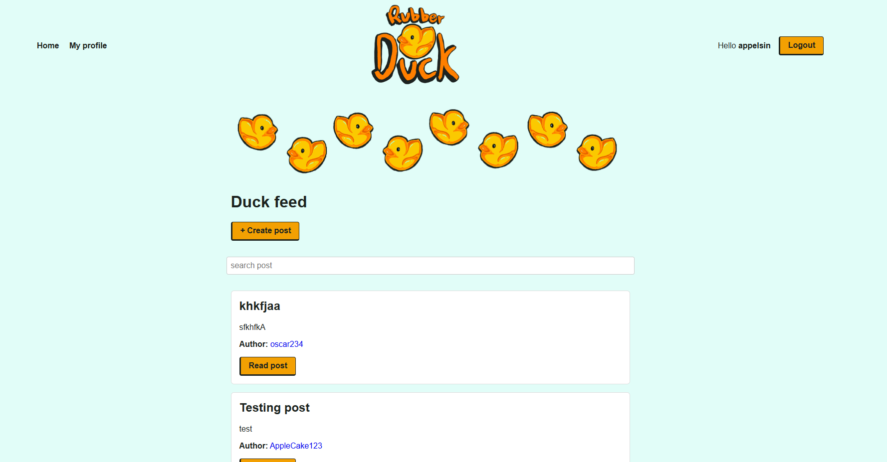
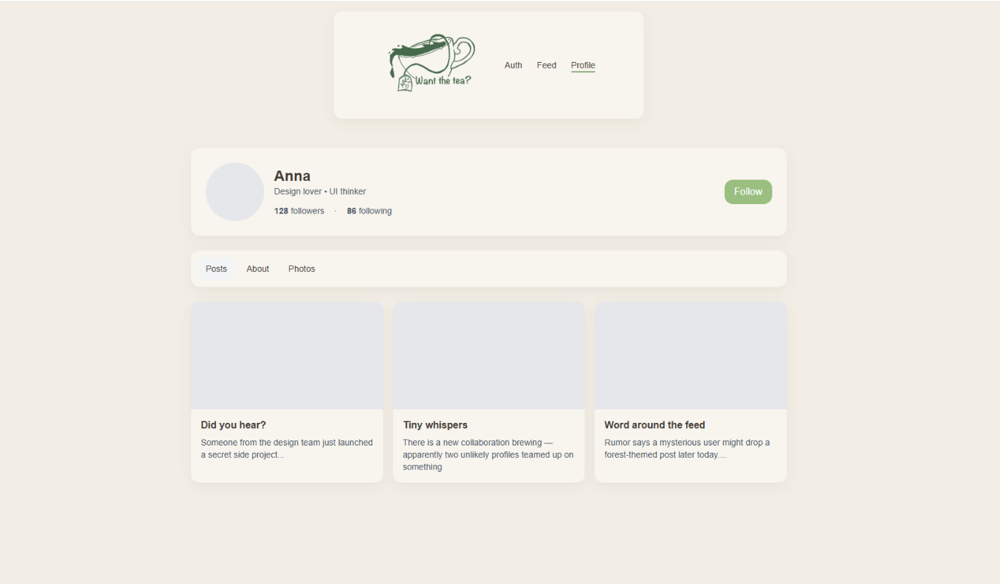
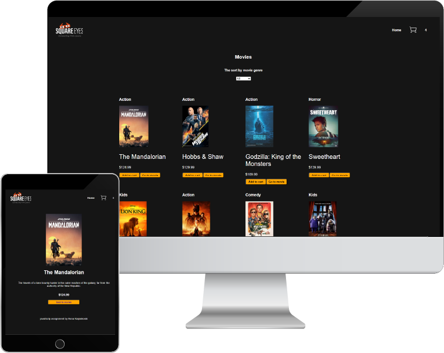
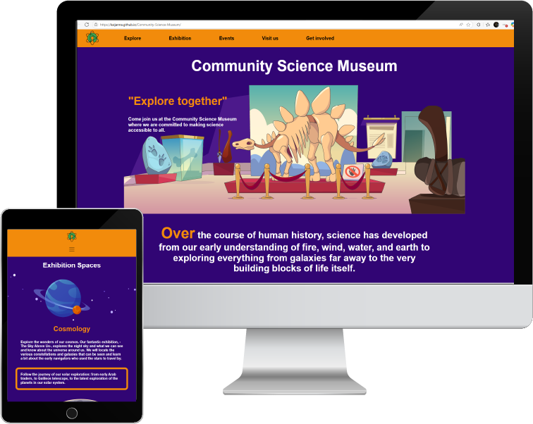
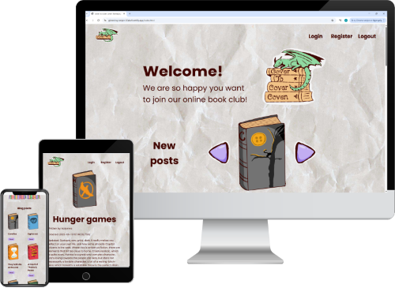
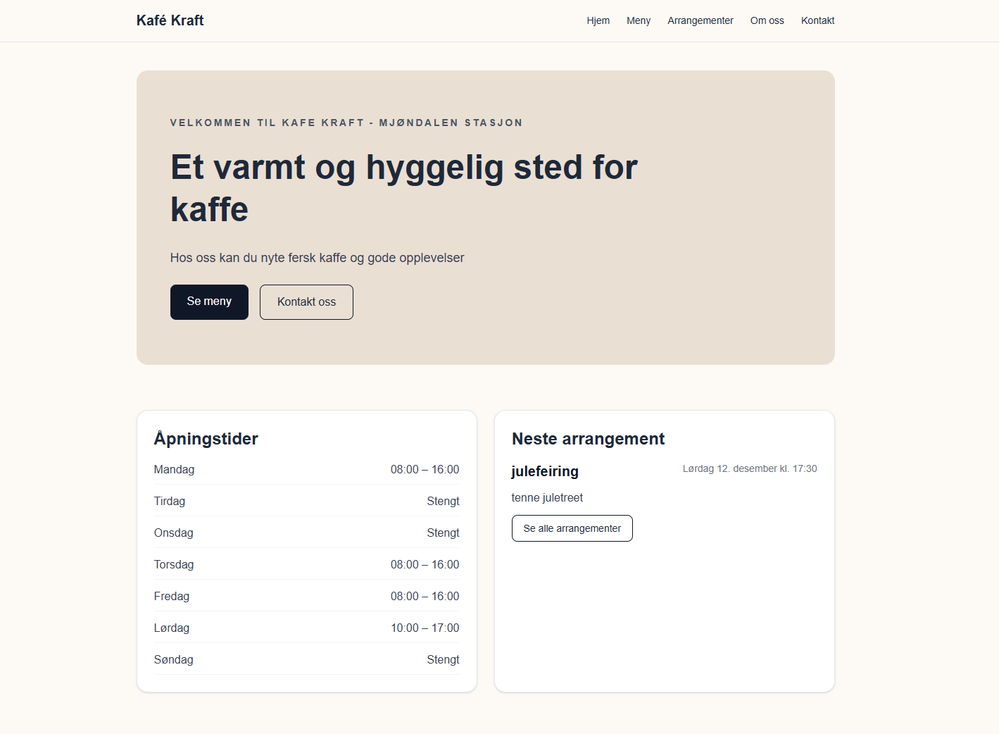

Anna Kaijankoski
PORTFOLIO
frontend developer
Projects
Featured Projects

MyShop – Online Store
Next.js • TypeScript • API • Cart
A modern online shop built with Next.js and TypeScript. Users can browse products, search and sort items, view product details, and add items to a shopping cart before checkout.

DungeonNews
HTML • CSS • JavaScript • Supabase
A news platform where users can browse articles publicly and authenticated users can create and manage their own content.

Social Media Front-End
HTML • CSS • JavaScript • Fetch API
Users can register, log in, create posts, edit and delete content, and follow other users.

Want The Tea
HTML • Tailwind CSS
A responsive social media front end focused on consistent styling, accessibility and a cozy visual theme.
Earlier Projects

Square Eyes
Movie e-commerce site built with HTML, CSS and JavaScript using REST API.

Community Science Museum
Information website built with HTML and CSS for families and children.

Cover to Cover Coven
Blog site built with HTML, CSS and JavaScript using API.
Currently Building

Currently building a fullstack café website with admin panel and Supabase backend.
Café Website
Next.js • TypeScript • Tailwind • Supabase
A café website with editable content, opening hours, event management and admin functionality.
About me
My name is Anna Kaijankoski, and I have a background in graphic design from Noroff. That was also where I was first introduced to coding, and where I built my first web page using HTML and CSS.
Since then, I have continued into front-end development, where I have built projects using HTML, CSS, JavaScript, React, Next.js, TypeScript, and APIs.
With a strong interest in both design and development, I enjoy turning ideas into functional and user-friendly digital experiences.
Contact
If you would like to get in touch, feel free to email me at kaijanna@hotmail.com
You can also view more of my work on GitHub.